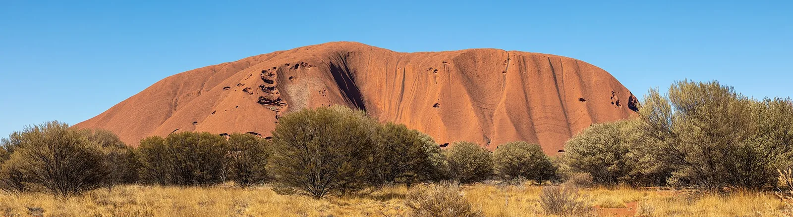
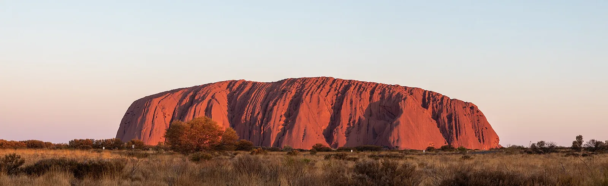

S15 · Sur
S15 · Süden
S15 · South
Uluru
Vi el Uluru, una roca sagrada del tamaño de una montaña.
Ich sah den Uluru, einen heiligen Felsen, so groß wie ein Berg.
I saw Uluru, a sacred rock the size of a mountain.
Información
El Parque Nacional Uluru-Kata Tjuta protege dos formaciones geológicas que dominan la llanura roja del centro de Australia: Uluru, un monolito inmenso, y Kata Tjuta, un conjunto de domos de roca al oeste.
Los propietarios tradicionales son los anangu, uno de los pueblos de sociedad más antigua del mundo. Uluru y Kata Tjuta forman parte de su sistema de creencias, el Tjukurpa: la ley, las canciones y las historias que se transmiten de generación en generación y que, según los anangu, hay que sostener.
Information
El Parque Nacional Uluru-Kata Tjuta protege dos formaciones geológicas que dominan la llanura roja del centro de Australia: Uluru, un monolito inmenso, y Kata Tjuta, un conjunto de domos de roca al oeste.
Los propietarios tradicionales son los anangu, uno de los pueblos de sociedad más antigua del mundo. Uluru y Kata Tjuta forman parte de su sistema de creencias, el Tjukurpa: la ley, las canciones y las historias que se transmiten de generación en generación y que, según los anangu, hay que sostener.
Information
El Parque Nacional Uluru-Kata Tjuta protege dos formaciones geológicas que dominan la llanura roja del centro de Australia: Uluru, un monolito inmenso, y Kata Tjuta, un conjunto de domos de roca al oeste.
Los propietarios tradicionales son los anangu, uno de los pueblos de sociedad más antigua del mundo. Uluru y Kata Tjuta forman parte de su sistema de creencias, el Tjukurpa: la ley, las canciones y las historias que se transmiten de generación en generación y que, según los anangu, hay que sostener.
Otra donde la noticia es buena: la UICN evalúa Uluru-Kata Tjuta como «bueno». Los valores del sitio están en buen estado y es probable que se mantengan, y la protección se considera en general muy eficaz.
La tierra es de propiedad aborigen y se maneja de forma conjunta, combinando conocimiento tradicional y científico, a través de un consejo con mayoría de propietarios tradicionales —los anangu—. El manejo se guía por el Tjukurpa, la ley y la cultura anangu, junto con la legislación australiana.
Otra donde la noticia es buena: la UICN evalúa Uluru-Kata Tjuta como «bueno». Los valores del sitio están en buen estado y es probable que se mantengan, y la protección se considera en general muy eficaz.
La tierra es de propiedad aborigen y se maneja de forma conjunta, combinando conocimiento tradicional y científico, a través de un consejo con mayoría de propietarios tradicionales —los anangu—. El manejo se guía por el Tjukurpa, la ley y la cultura anangu, junto con la legislación australiana.
Otra donde la noticia es buena: la UICN evalúa Uluru-Kata Tjuta como «bueno». Los valores del sitio están en buen estado y es probable que se mantengan, y la protección se considera en general muy eficaz.
La tierra es de propiedad aborigen y se maneja de forma conjunta, combinando conocimiento tradicional y científico, a través de un consejo con mayoría de propietarios tradicionales —los anangu—. El manejo se guía por el Tjukurpa, la ley y la cultura anangu, junto con la legislación australiana.
Fuentes
Quellen
Sources
- UICN, Perspectiva del Patrimonio Mundial (evaluación 2025), Uluṟu-Kata Tjuṯa National Park — https://worldheritageoutlook.iucn.org/explore-sites/uluru-kata-tjuta-national-park
Galería
Galerie
Gallery


Fuentes
Quellen
Sources
- UNESCO, Centro del Patrimonio Mundial, Uluru-Kata Tjuta National Park — https://whc.unesco.org/en/list/447/ consultado 2026-10-05abgerufen 2026-10-05accessed 2026-10-05